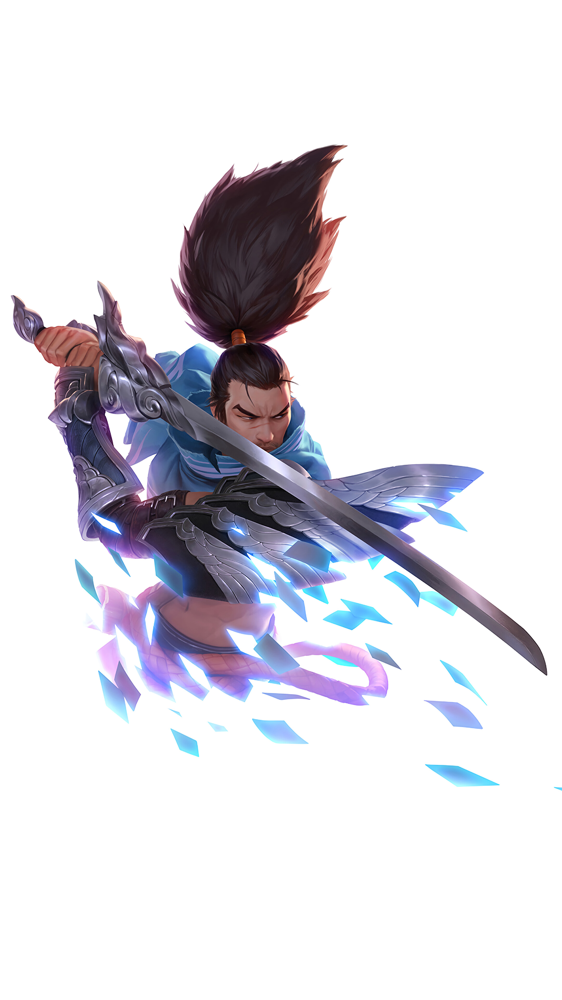

| 
|
ЩО ТАКЕ LEAGUE OF LEGENDS?
League of Legends – це стратегічна кооперативна гра,
в якій дві команди з п'яти могутніх чемпіонів борються одна з одною,
намагаючись знищити ворожу базу. Вибирайте персонажа з більш ніж 140 чемпіонів,
створюйте епічні моменти, заробляйте вбивства та зносіть вежі на шляху до перемоги.
|
Мрієте стати титаном, який буде захищати вашу команду,
чи вбивцею, який вирізає ворогів? В цій грі ви зможете стати ким завгодно!
У вас на вибір більш ніж 150 чемпіонів
|
В грі є 5 ролей:
(кількість зірочок - це складніть цієї ролі)
|
Суть ролі:
- На цю роль беруть чемпіона, який допоможе команді у різних сітуаціях
Переважно чемпіонів з великим запасом HP, або щось середне між DMG та HP
- На цю роль беруть чемпіона, який буде мати багато DMG
- На цю роль беруть чемпіона, який допоможе команді у різних сітуаціях
Його ціль бігати між лініями, щоб допомагати союзникам виборити перевагу
- На цю роль беруть чемпіона, який буде мати багато DMG
- На цю роль беруть чемпіона, який допоможе команді у різних сітуаціях
Зазвичай ця роль допоміжна і зосереджуеться на допомозі BOT
Сюди беруть чемпіонів які мають багато HP,та Контролю противника, або можуть лікувати
|